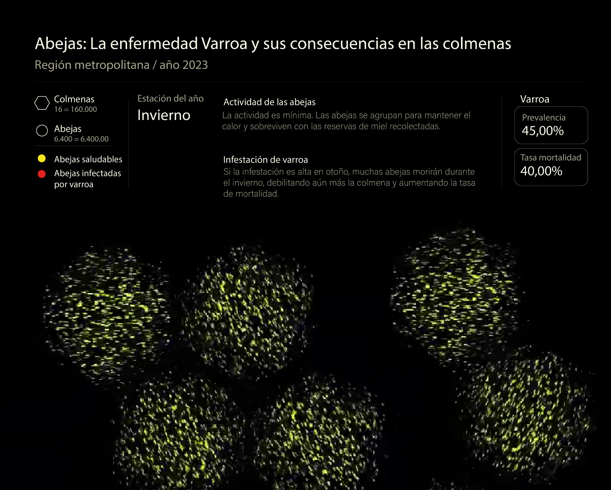
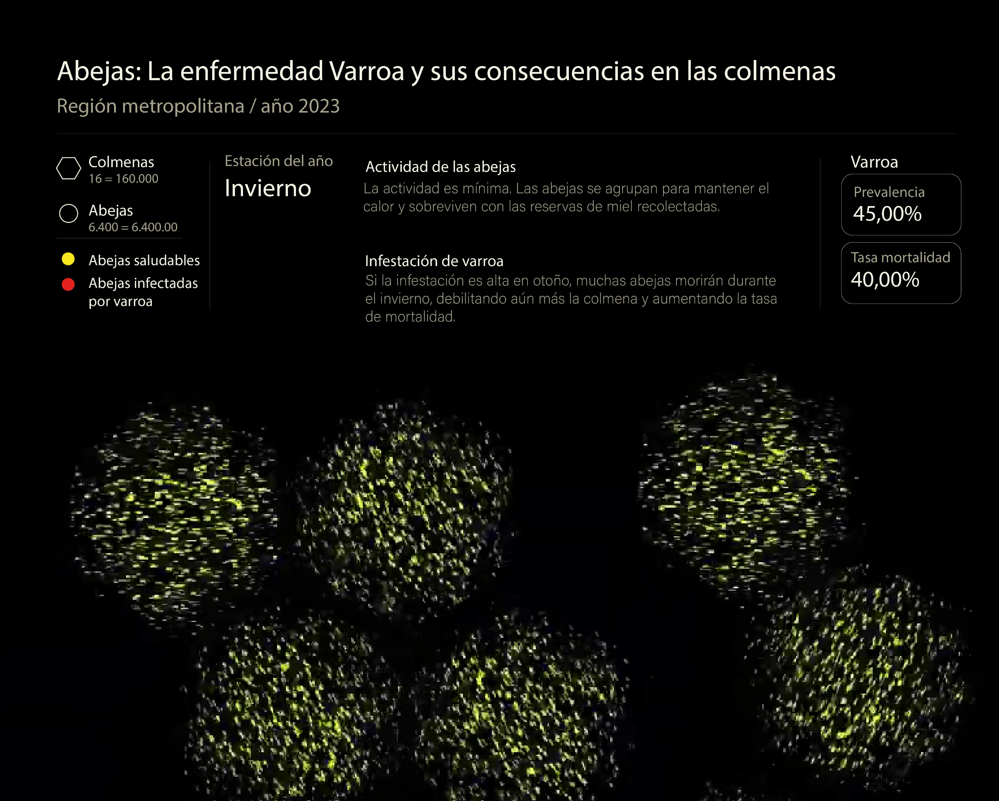

Este proyecto de visualización experimental abordó la disminución de las abejas melíferas en la Región Metropolitana, enfocándose en la mortalidad causada por la enfermedad Varroa. La información se obtuvo a partir de los boletines anuales del Servicio Agrícola y Ganadero (SAG), que proporcionaron datos sobre la mortalidad de las colmenas. La representación visual mostraba los decesos anuales, desglosados por estaciones, para analizar cómo la enfermedad, junto con factores climáticos, impacta la salud de las abejas. La visualización integró un componente interactivo mediante Arduino: un sensor de proximidad detectaba la presencia de los espectadores, activando la representación de los datos. Este enfoque dinámico y envolvente buscó concientizar sobre el impacto ambiental y la importancia de proteger a las abejas.
- Integrantes: Catalina Álvarez, Aylen Bassaletti, Catalina Hernández y Simon Lira.
- Fecha: 09/07/2024
- Temática: Visualización experimental de datos.
- Recursos Digitales: Illustrator, Touch Designer, Rhinoceros, After Effects.
- Recursos de Fabricacón: Corte láser.
- Recursos de Interacción: Arduino, Processing.